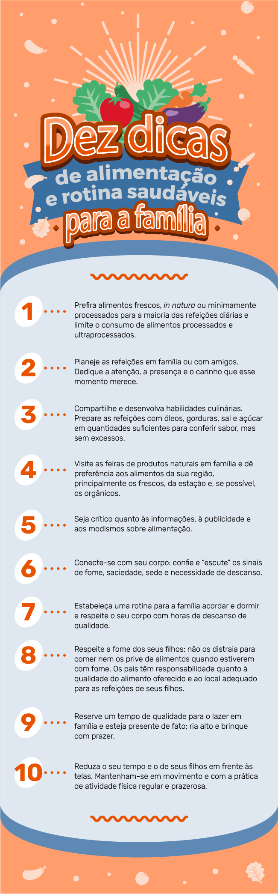

Família

Clique ou toque para assistir aos vídeos.
Cenário da obesidade infantil
Obesidade no mundo e no Brasil
Obesidade infantil: um dos desafios da saúde pública do século XXI. Confira o cenário atual desta epidemia.
Atualidade, como mudar?
Pequenas mudanças para grandes transformações no cenário da obesidade infantil.

Fatores da obesidade complexa e multifatorial
Ambientes “obesogênicos” e sedentarismo
Fatores externos e suas influências no cotidiano sedentário
Alimentos pouco saudáveis e o acesso a comidas industrializadas
A falta de acesso a alimentos saudáveis e a facilidade das comidas industrializadas: uma combinação perigosa
Extensa jornada de trabalho dos pais e aleitamento materno
A rotina dos pais e sua influência no crescimento saudável
Publicidade direcionada
A intervenção da publicidade na escolha dos alimentos

DESFECHOS E IMPACTOS DA OBESIDADE NA SAÚDE
Doenças crônicas e complicações físicas
A obesidade infantil e o impacto no corpo
Problemas sociais e seus impactos
A obesidade infantil e o impacto na mente

PREVENÇÃO E TRATAMENTO
Alimentação saudável: onde começa?
As mudanças no prato e as transformações saudáveis
Alimentação saudável e as categorias dos alimentos
As categorias dos alimentos e a qualidade de suas refeições
Alimentação saudável: monte seu prato
Passo a passo de como montar um prato colorido, diverso e saudável
Alimentação saudável: preserve seus alimentos
Dicas de como preservar seus alimentos e mantê-los frescos por mais tempo
Alimentação saudável: manipulação segura
Dicas de como manipular corretamente os alimentos e mantê-los seguros
Alimentação saudável: atenção aos rótulos
Dicas de como entender os rótulos e conhecer os alimentos que você compra

O ATO DE COMER
Regularidade e atenção
A importância de comer com regularidade e atenção
Escolha o ambiente
A importância do ambiente na hora de comer
Escolha a companhia
A importância da companhia na hora de comer

Crescendo feliz!
Rotina na alimentação
A rotina como fator essencial para a alimentação saudável
Pratos coloridos
Pratos coloridos e saúde de qualidade
Xô, sedentarismo!
A rotina como fator essencial para a alimentação saudável
Fechamento da imersão das “Dicas crescendo com saúde”
A importância do exercício físico no combate à obesidade
Dicas finais
Confira a seguir dez dicas de alimentação e rotina saudáveis para a família, adaptadas do Guia Alimentar para a População Brasileira (2014).
Lembre-se de que são fundamentais a sua participação e o seu exemplo no processo de uma alimentação saudável para as crianças!
Dez dicas de alimentação e rotina saudáveis para a família
- Prefira alimentos frescos, in natura ou minimamente processados para a maioria das refeições diárias e limite o consumo de alimentos processados e ultraprocessados.
- Planeje as refeições em família ou com amigos. Dedique a atenção, a presença e o carinho que esse momento merece.
- Compartilhe e desenvolva habilidades culinárias. Prepare as refeições com óleos, gorduras, sal e açúcar em quantidades suficientes para conferir sabor, mas sem excessos.
- Visite as feiras de produtos naturais em família e dê preferência aos alimentos da sua região, principalmente os frescos, da estação e, se possível, os orgânicos.
- Seja crítico quanto às informações, à publicidade e aos modismos sobre alimentação.
- Conecte-se com seu corpo: confie e “escute” os sinais de fome, saciedade, sede e necessidade de descanso.
- Estabeleça uma rotina para a família acordar e dormir e respeite o seu corpo com horas de descanso de qualidade.
- Respeite a fome dos seus filhos: não os distraia para comer nem os prive de alimentos quando estiverem com fome. Os pais têm responsabilidade quanto à qualidade do alimento oferecido e ao local adequado para as refeições de seus filhos.
- Reserve um tempo de qualidade para o lazer em família e esteja presente de fato; ria alto e brinque com prazer.
- Reduza o seu tempo e o de seus filhos em frente às telas. Mantenham-se em movimento e com a prática de atividade física regular e prazerosa.
Material Complementar
Confira a seguir alguns materiais complementares para que você aprofunde seus conhecimentos, compartilhando-os também com as crianças.
Entendendo os rótulos na prática
Na tabela nutricional, você encontrará as informações referentes à composição nutricional do produto. Clique para saber mais sobre cada um:
Os valores descritos em cada item da tabela nutricional (carboidrato, proteína, gorduras etc.) são referentes à porção descrita na tabela e não se referem à composição total do alimento.

Os valores descritos em cada item da tabela nutricional (carboidrato, proteína, gorduras etc.) são referentes à porção descrita na tabela e não se referem à composição total do alimento.
Valor energético
É a energia produzida pelo nosso corpo, proveniente dos carboidratos, das proteínas e das gorduras totais. Na rotulagem nutricional, o valor energético é expresso em forma de quilocalorias (kcal) e quilojoules (kJ).
Obs.: quilojoule (kJ) é outra forma de medir o valor energético dos alimentos, sendo que 1 kcal equivale a 4,2 kJ.
Carboidratos
São os componentes dos alimentos cuja principal função é fornecer a energia para as células do corpo. Os carboidratos são encontrados em maior quantidade em massas, arroz, açúcar, mel, pães, farinhas, tubérculos (como batata, mandioca e inhame) e doces em geral.
Na legislação em vigência, ainda não é obrigatória a informação sobre o açúcar na rotulagem, sendo ele incluído como carboidrato. É preciso buscar essa informação na lista de ingredientes, na qual o açúcar pode ser mencionado com outros nomes, como glucose de milho, glicose, xarope de malte, frutose, sacarose, maltodextrina, dextrose, néctares, xarope de milho.
Proteínas
São componentes dos alimentos, necessários para construção e manutenção de órgãos, tecidos e células do corpo. As proteínas são encontradas em carnes, ovos, leites e derivados e também nas leguminosas (como feijões, soja e ervilha).
Gorduras totais
São as principais fontes de energia do corpo e ajudam na absorção das vitaminas A, D, E K. As gorduras totais referem-se à soma de todos os tipos de gorduras encontradas em um alimento que seja tanto de origem animal quanto de origem vegetal.
Gordura saturada
É um tipo de gordura presente em alimentos de origem animal (carnes, toucinho, pele de frango, queijos, leite integral, manteiga, requeijão, iogurte). O consumo desse tipo de gordura deve ser moderado, pois, se consumido em grandes quantidades, pode aumentar o risco de desenvolvimento de doenças do coração.
Gordura trans
Gordura trans ou ácido graxo trans são um tipo de gordura que pode estar naturalmente presente em alimentos de origem animal ou ser produzida industrialmente por meio de processos tecnológicos, a fim de conferir maior crocância e sabor e aumentar o tempo das condições de consumo de determinados produtos. Esse tipo de gordura é normalmente encontrado em alimentos ultraprocessados e, quando consumido em grande quantidade, pode aumentar o risco de desenvolvimento de doenças do coração. A informação sobre a quantidade de gordura trans nos alimentos é obrigatória no Brasil. Entretanto, se a quantidade presente no alimento for igual ou inferior a 0,2 gramas por porção do alimento, ela pode ser declarada como zero na tabela nutricional. Atualmente, a Organização Mundial de Saúde (OMS) recomenda que o consumo diário de gordura trans não ultrapasse 1% do valor energético total de uma dieta, o que representaria um valor que não excedesse 2 gramas por dia em uma dieta de 2.000 calorias.
Fibras alimentares
São partes dos alimentos que resistem à digestão e reduzem o tempo que o alimento leva para ser digerido e eliminado. As fibras alimentares são benéficas para a função intestinal, previnem a constipação, favorecem a absorção de alguns nutrientes e são fatores de proteção contra algumas doenças.
Sódio
É o principal constituinte do sal de cozinha e está muito presente em alimentos industrializados. Ele deve ser consumido com moderação, já que o seu consumo em excesso pode resultar em aumento da pressão arterial. Segundo o Ministério da Saúde, se a quantidade de sódio for maior do que 400 mg em 100 g do alimento, este será considerado um alimento rico em sódio, sendo prejudicial à saúde e, portanto, devendo ser evitado.
Porção
É a quantidade média do alimento que deve ser usualmente consumida por pessoas sadias, promovendo a alimentação saudável.
Percentual de valores diários (%VD)
É um número em percentual que indica quanto o produto em questão apresenta de energia e nutrientes em relação a uma dieta 2.000 calorias.
Medida caseira
Indica a medida normalmente utilizada pelo consumidor para medir alimentos, por exemplo: fatias, unidades, pote, xícaras, copos, colheres de sopa. A apresentação da medida caseira é obrigatória, ajudando a entender melhor as informações nutricionais.
Os valores descritos em cada item da tabela nutricional (carboidrato, proteína, gorduras etc.) são referentes à porção descrita na tabela e não se referem à composição total do alimento.
Referências:
https://bvsms.saude.gov.br/bvs/publicacoes/guia_alimentar_
populacao_brasileira_2ed.pdf